Engine preset: godot. Review evidence, not a shipping certification.
| Mesh | Triangles | Export vertices | Materials | Max sampled error |
|---|---|---|---|---|
| LOD0 | 39,985 | 69,333 | 1 | 0.122% |
| LOD1 | 19,699 | 36,948 | 1 | 0.292% |
| LOD2 | 9,457 | 19,047 | 1 | 0.597% |
| LOD3 | 5,060 | 11,414 | 1 | 1.130% |
UV coverage: 19.0%; islands: 12,587; estimated runtime textures: 22.0 MiB (RGBA8 with mipmaps).
{
"collision_hulls": 16,
"engine": "godot",
"errors": [],
"lods": [
{
"lod": 0.0,
"triangles": 39985,
"vertices": 69333
},
{
"lod": 1.0,
"triangles": 19699,
"vertices": 36948
},
{
"lod": 2.0,
"triangles": 9457,
"vertices": 19047
},
{
"lod": 3.0,
"triangles": 5060,
"vertices": 11414
}
],
"scene": "engine_check/asset.tscn",
"status": "passed",
"version": "4.7.2-stable (official)"
}
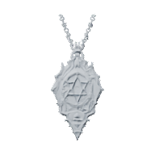
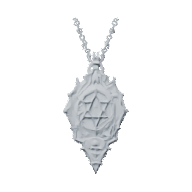
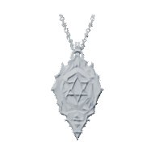
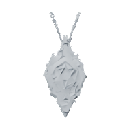
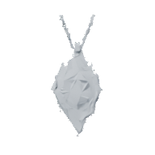
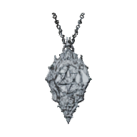
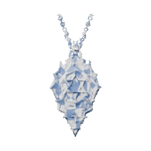
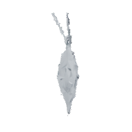
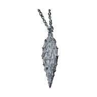
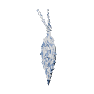
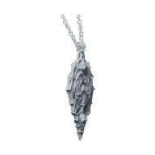
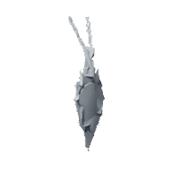
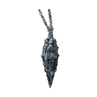
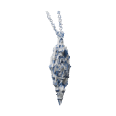
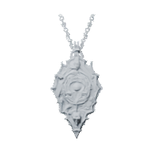
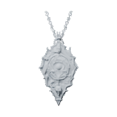
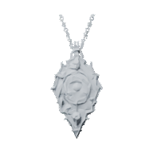
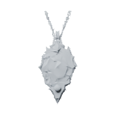
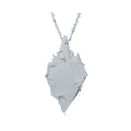
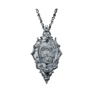
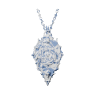
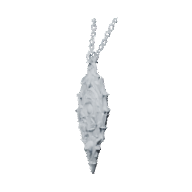
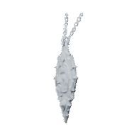
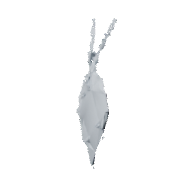
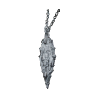
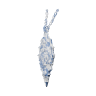
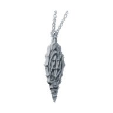
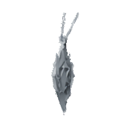
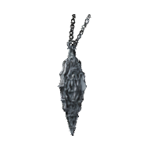
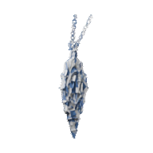